A story of 2 years of making (many) mistakes, and about learning (some)
Take a slow ML algorithm, with a (rather) slow language (yes, I said it).
Think about S shapes of technological progress, iterating, hundreds of configurations, running at night, passive cooling, mixing languages, (way too many) wrong approximations, and repeating again, and again, and again…
Today is a bit about… Being obsessive.
For no good reason.
After reading about J.H. Holland’s LCS algorithm in Melanie Mitchell’s book on “Complexity”…
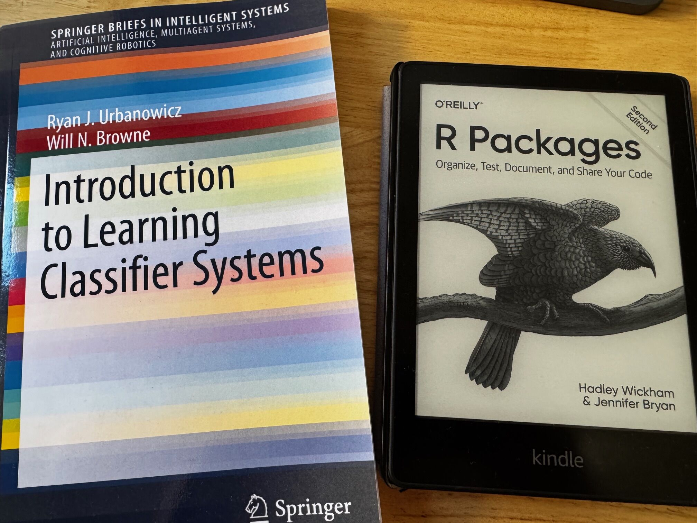
How it started
THE BEST INTRO to the LCS Algorithm out-there (hands down!) (12’ video)
Already, the thing “worked”.
A few months later, it was my first R package. The first LCS implementation in R (AFAICT, anyway…)
It’s all here: https://github.com/kaizen-R/RLCS.
It had some simplifications. 2 years later, some of these persist and make it wrong (and in some ways better at the same time!).
I was officially accepted October 8th, 2026.
Joyful time.
If you fancy having even less spare time.
But we’ll get back to this later.
Let’s talk about R a bit
I didn’t buy a fresher Mac (Maybe I should have..)
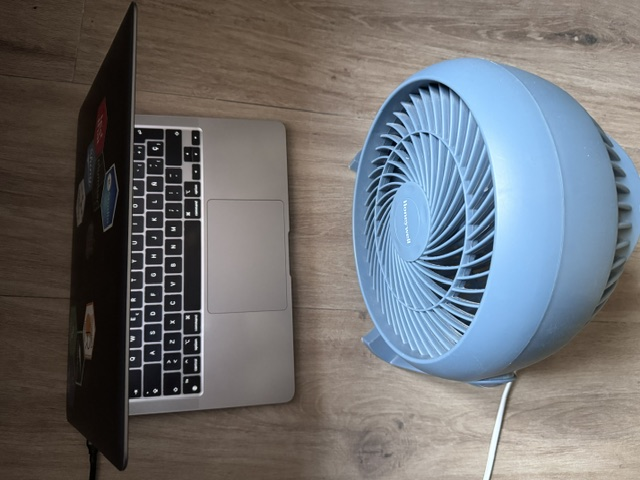
Long running multi-Core process in passive cooled Macbook Air M1
(EDIT: Now this is false, but that changed literally two weeks ago…)
First version used all lists. It made conceptual sense. It worked. It was (especially) slow.
In the end I got rid of the lists altogether. Scary refactoring, but it worked out ok…
AFTER trying everything else… Try C++ (Rcpp)…
browser() is your best friend in the whole-wide-world
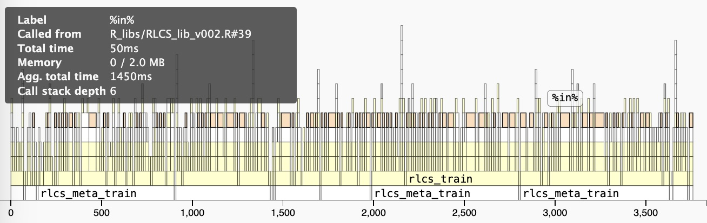
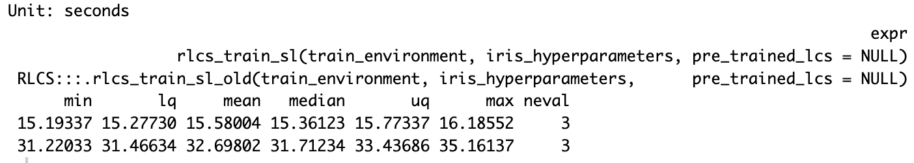
When you run several simulations (37h+…)
Parallel execution becomes a great ally. And I’ve tried a few combinations. I currently settle on {foreach}-{doParallel}. Sometimes, even {plumbeR}!
You could use {future.apply} or {mirai}. I also want to look into {mizu}, the new kid in town.
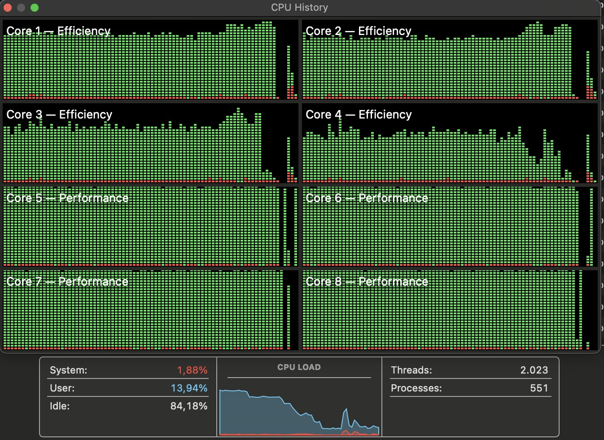
Save runtimes through parallel processing. On M6, it’s even more beautiful!
Not as “functional”, but, like it or not, in some cases, faster. Much.
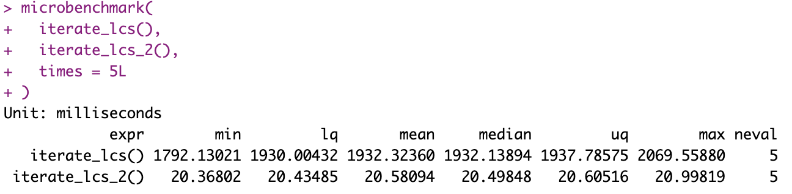
Passing references (environment()) instead of large variables…
Breaking the input data. Kinda works. Much faster. Not a great idea.
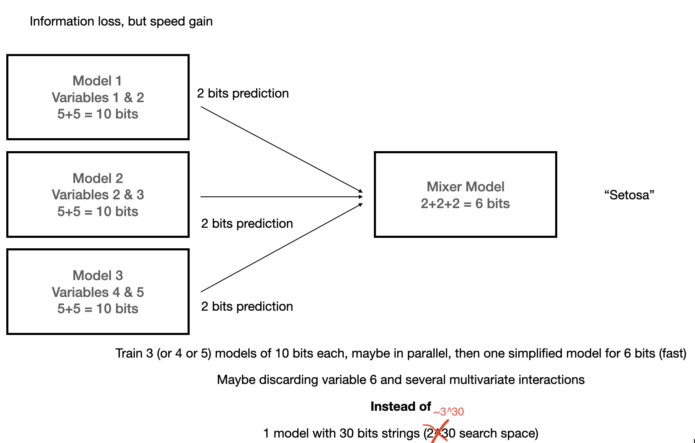
Bad idea, per Papert & Minsky’s “Perceptrons”…Skipping steps
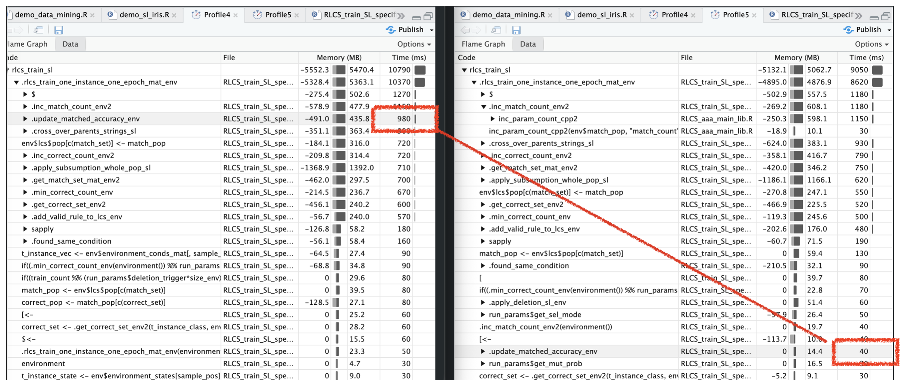
Moving calls around for speed
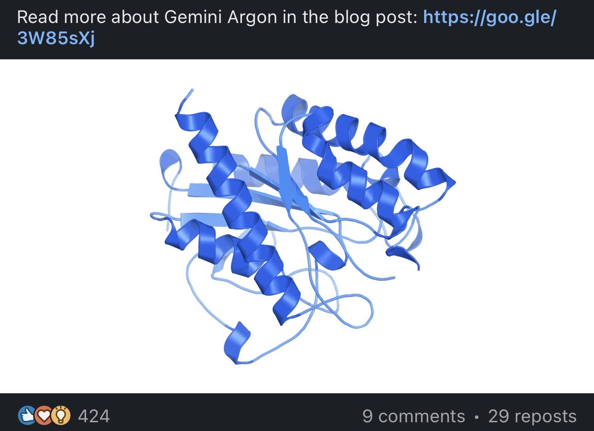
LLM can model proteins
Coding (and reading) ~ “additional ponder time”, testing alternatives, understanding the papers & equations…
At these very conferences: “AI could write my thesis”.
Well, “AI” can write papers, indeed! But why do a PhD then?
Naive (and idealistic, and romantic) take:
It is about becoming an expert & making some scientific progress (even something minuscule). And maybe it’s one way to direct learning efforts.
And my wife wouldn’t let me study another MSc.! :D
Not for any code of RLCS. Because I didn’t have a time pressure. Coding is a satisfying experience.
Maybe not using AI is really a privilege?
Just keep learning, you never know what’s around the corner.
Taking our time to learn and understand is becoming a luxury.
And coding in R is just as good an option as any other for that.
The Package per-se (github for now) (and some more info!)
THE BEST INTRO to the LCS Algorithm out-there (hands down!) (12’ video)
General lines…
| Working on… | Status |
|---|---|
| State of the art (my code doesn’t respect preceding algorithms…), literature review | Ongoing |
| train/validation/test, stratified 5-fold | Coded |
| Fix issues (data leakage in encoding…) | Done |
| Better ML metrics for (SL) evaluations | Done |
| Repeatability (datasets, seeds, etc.) | Done |
| Run (thousands?) configs & iterations in grid search of several algorithms? | Next up. |
Secret Sauce! This is quite possibly my first original (as far as I can tell) contribution.
More on this when (if? Nah, when!) I publish my first PhD Paper ;)
It’s not a secret either & I can show I have “priority” ;) (Until proven wrong, of course…)
Don’t encode data points, encode information!
Better Encodings, regularization and its effects…
E.g. Gini/entropy to change encoding length? Things like that, there is a lot to be considered! Trees encoding, etc.
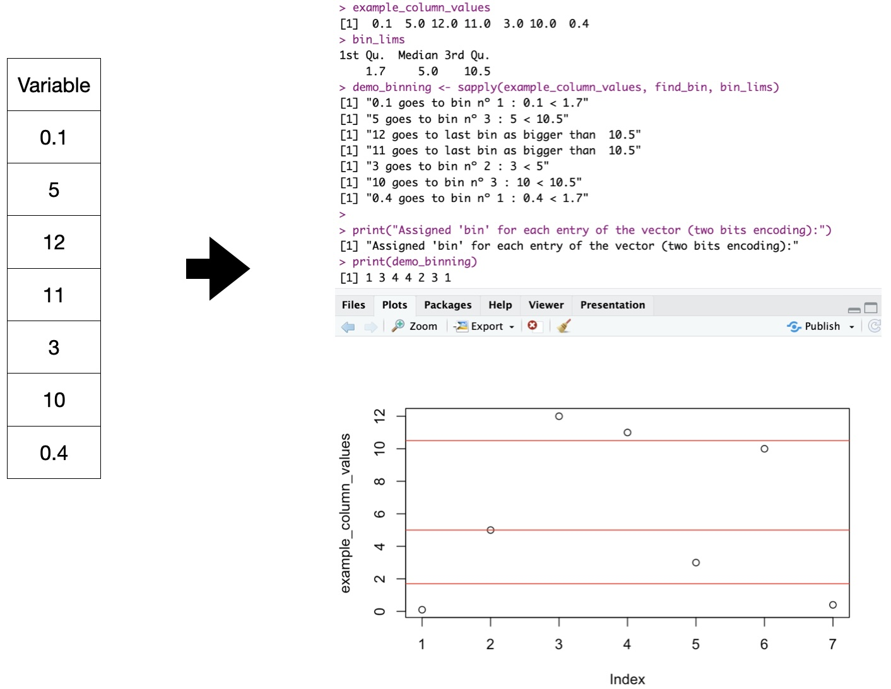
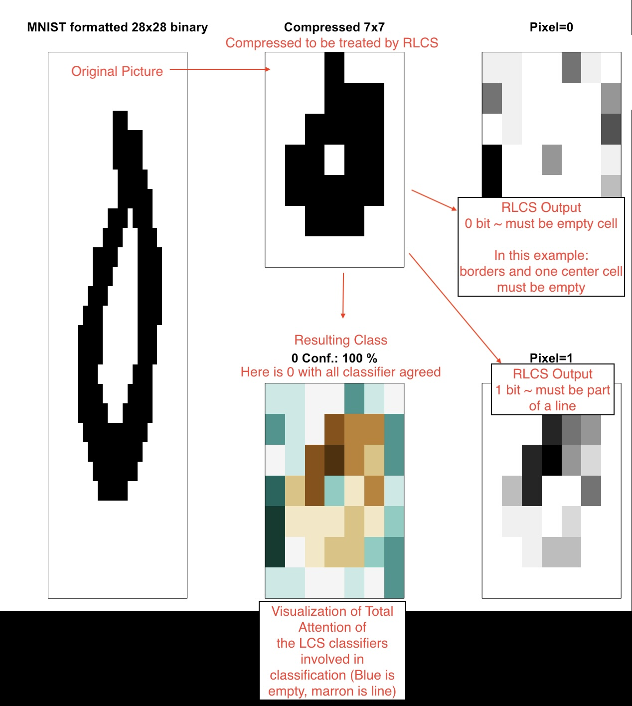
That’s how I came to know my then-future-Thesis-Supervisors.
After discovering the concept, I thought I could come up with new data complexity measures, specific to RLCS.
Then I could leverage those metrics for “active learning”
exposing (in training) to fewer overall samples
while maintaining classification quality
and hence reduce runtimes
Hopefully anyway :D
While inherently interpretable, the rule-set (RLCS Model) gets complex quickly.
For Reinforcement Learning settings, I believe there is a way to leverage subsumption steps during training to distill information (“consolidate”) into a separate hierarchy of RLCS models, for shorter input strings (faster training/inference) while maintaining learning capacity.
TBC.